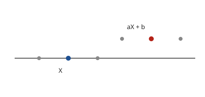

<script>if(location.hostname.endsWith('onrender.com'))location.replace('https://math-sandbox.github.io'+location.pathname+location.search+location.hash)</script>
<section class="theory" data-section="S2-3.1">
<h2>3.1 Expectation and variance</h2>
<p class="src">Based on Cambridge International AS &amp; A Level Mathematics: Probability &amp; Statistics 2 Coursebook, Chapter 3, printed pp.51–55 (expectation and variance of a linear combination of a single random variable). Printed pages were read from S2.pdf (printed 51–55 = PDF 63–67). Own wording and new numbers. Teaching stops at Key points 3.1–3.3 for one random variable; sums of two independent random variables belong later.</p>
<p class="key-words"><strong>Key words:</strong> <em>expectation of a linear combination</em>, <em>variance of a linear combination</em></p>
<p>If \(X\) is a random variable and \(a\) and \(b\) are constants, the <strong>expectation of a linear combination</strong> and the <strong>variance of a linear combination</strong> of that single random variable are given by</p>
<p>\(\operatorname{E}(aX+b)=a\operatorname{E}(X)+b\) and \(\operatorname{Var}(aX+b)=a^2\operatorname{Var}(X)\).</p>
<figure>

<figcaption>A scale factor \(a\) multiplies the mean by \(a\) and the variance by \(a^2\); a shift \(b\) changes the mean but not the variance.</figcaption>
</figure>
<p>In particular, \(\operatorname{E}(X+b)=\operatorname{E}(X)+b\), \(\operatorname{Var}(X+b)=\operatorname{Var}(X)\), \(\operatorname{E}(aX)=a\operatorname{E}(X)\) and \(\operatorname{Var}(aX)=a^2\operatorname{Var}(X)\). The corresponding result for a sum of two independent random variables is not needed in this subsection.</p>
<div class="worked-example"><h4>Worked example 1</h4>
<p class="src">Book: Key point 3.2, printed pp.51–55. New integer numbers.</p>
<p>The random variable \(X\) has expectation 5. Find \(\operatorname{E}(3X+1)\).</p>
<ol class="steps">
<li>\(\operatorname{E}(3X+1)=3\operatorname{E}(X)+1=3\times 5+1=16\). <span class="mark">A1</span></li>
</ol></div>
<div class="worked-example"><h4>Worked example 2</h4>
<p class="src">Book: Key point 3.3, printed pp.51–55. New integer numbers.</p>
<p>The random variable \(X\) has variance 4. Find \(\operatorname{Var}(3X+1)\).</p>
<ol class="steps">
<li>\(\operatorname{Var}(3X+1)=3^2\operatorname{Var}(X)=9\times 4=36\). <span class="mark">A1</span></li>
</ol></div>
<h3>Common mistakes</h3><ul>
<li>Using \(a\operatorname{Var}(X)\) instead of \(a^2\operatorname{Var}(X)\), or adding \(b\) to the variance.</li>
<li>Writing \(\operatorname{E}(aX+b)=a\operatorname{E}(X)+b\operatorname{E}(1)\) incorrectly as \(a\operatorname{E}(X)\) only, omitting the shift.</li>
</ul>
<div class="quick-check" data-q="QC1">
<h4>Quick check 1</h4>
<p>The random variable \(X\) has expectation 5. Find \(\operatorname{E}(3X+1)\).</p>
<details>
<summary>Show answer</summary>
<ol class="steps">
<li>\(\operatorname{E}(3X+1)=3\times 5+1=16\). <span class="mark">A1</span></li>
</ol>
<p class="final">\(16\)</p>
</details>
</div>
<div class="quick-check" data-q="QC2">
<h4>Quick check 2</h4>
<p>The random variable \(X\) has variance 4. Find \(\operatorname{Var}(3X+1)\).</p>
<details>
<summary>Show answer</summary>
<ol class="steps">
<li>\(\operatorname{Var}(3X+1)=9\times 4=36\). <span class="mark">A1</span></li>
</ol>
<p class="final">\(36\)</p>
</details>
</div>
<div class="quick-check" data-q="QC3">
<h4>Quick check 3</h4>
<p>The random variable \(X\) has expectation 2 and variance 3. Find \(\operatorname{Var}(2X-5)\).</p>
<details>
<summary>Show answer</summary>
<ol class="steps">
<li>\(\operatorname{Var}(2X-5)=4\times 3=12\). <span class="mark">A1</span></li>
</ol>
<p class="final">\(12\)</p>
</details>
</div>
<h3>Past paper</h3>
<p class="src">9709/73/O/N/19 Question 1(ii) only, 2 marks, together with the relevant part of the opening stem. Official QP and MS. Part (i) is a sum of four independent values and belongs later; it is omitted. Questions 4 and 6 of this paper were already used in earlier packages.</p>
<p>The random variable \(X\) has mean 2.4 and variance 3.1.</p>
<p>(ii) The random variable \(Z\) is defined by \(Z=4X-3\). Find the mean and variance of \(Z\). [2]</p>
<details><summary>Show official scheme</summary>
<ol class="steps">
<li>Mean of \(Z\) is \(6.6\). Official MS: B1. <span class="mark">B1</span></li>
<li>Variance of \(Z\) is \(49.6\). Official MS: B1. <span class="mark">B1</span></li>
</ol></details>
</section>
